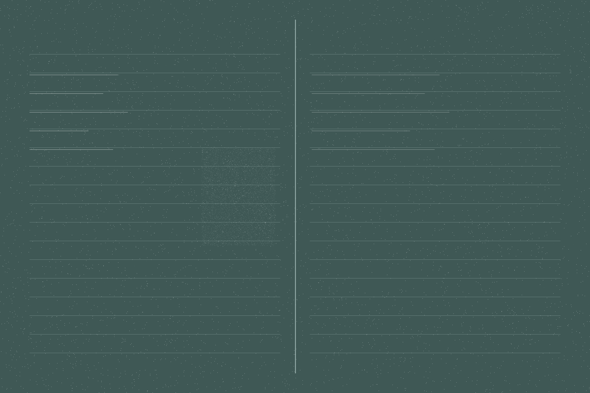

下面是最近一户的对账表，主人同意公开。左边是他的原话，右边是我们最后记进合同的数。中间那几条是我们加问了一次才问出来的——大多数争执就出在这几条上。
-
厨房台面别太高，我媳妇个子不高
台面完成面 840mm。问了她身高 158，按肘高减 100 算的。一般做 850–900，这个确实低了。 -
阳台想封起来，冬天能晒东西，别太贵
断桥铝 70 系列，双层中空 5+12A+5，¥680/m²，总面积 11.4m²。「别太贵」按你后来补的预算 8000 以内落的，没超。 -
线要走得整齐点
强电走顶、弱电走地，横平竖直，转角 R≥6D。这条是标准做法，不加钱。 -
卫生间防水做扎实，楼下要是漏了麻烦死了
墙面 1.8m 高（淋浴区到顶），地面两遍，闭水 48 小时，蓄水 20mm。做完拍照发你，照片存进这套房的档案。 -
插座多留几个，我怕以后不够用
原方案 28 个，加到 41 个。加问了一次：厨房小电器你数了 9 件，台面上按 6 个留。这条是全部条目里唯一一处「按你说的加，我提醒过量的地方」。 -
尽快，最好一个月完工
合同工期 42 天。没答应一个月——防水闭水就要 2 天，瓷砖到场要 5 天，压不出来。写在合同第一条。 -
瓷砖我自己买，你们只管贴
只包铺贴，¥58/m²。留了 8% 损耗量给你（你自己买的那批补货要等 20 天，多留一点）。空鼓率按验收标准 ≤5%，超了我们返工。 -
预算大概 12 万，能压就压
合同 ¥118,400。压的是两处：橱柜从实木多层换成颗粒板省 ¥6,200，吊顶少做一间省 ¥2,800。没压防水、没压水电、没压瓷砖铺贴。
这张表怎么用
不是每个装修队都肯把「你说的」这一列原样写下来——因为写了就要认。我们把这一列留着，有三个用处：
-
签合同前
左右两列对一遍。看有没有哪一句你的原话，右边的数**明显不是那个意思**。有就当场改，改完再签。
-
施工中
师傅进场后如果有人说「这个当初没说要这么做」，就把这张表拿出来翻到那一行。原话在左边，数在右边，有争议的地方一目了然。
-
完工后
这张表跟这套房的隐蔽工程照片存在一起，一起交给你。三年内任何一处返工，我们先翻这张表——是我们记漏了，还是后来改了，表上写着。
哪些话我们会追着你问第二遍
下面这四类原话，如果只按字面记，几乎一定会出问题。所以听到这类话，我们会再问一次，把答案也写进右边那一列。
-
「差不多」
这三个字后面必须跟一个数。「差不多高」→ 多高？「差不多就行」→ 差多少是行、差多少不行？不问的话，三个月后"差不多"会变成两个不同的人各自的记忆。
-
「到时候再说」
凡是留到施工中再定的，我们会把它单独列成一行，标上「待定 · 需在某道工序前定」。待定项不写进合同价，但会写进合同工期——因为待定意味着到时候要停下来等。
-
「能省就省」
这句话没有边界。我们会把它拆成两栏：**可以省的**（吊顶、造型、柜体材料）和**不省的**（防水、水电、结构、铺贴空鼓率）。拆完给你看，你划掉哪条我们再谈。
-
「我朋友说……」
朋友的经验通常来自另一套房、另一个队、另一个年份。我们会问清「是哪一年做的、那套房多大、师傅是谁」，然后告诉你这条经验在这套房上成立不成立。成立就照做，不成立就说清为什么不成立。

PLUMB-33
下个月那户的水电师傅住院了，胆囊手术，休四周。这一户的开工日期要往后挪，具体挪多久我今晚逐个电话说，不在这一页上改——日期这种东西写在网页上，你看的时候可能已经变了。你要是等不了，我可以介绍另一队，手艺我保，价格你自己谈。